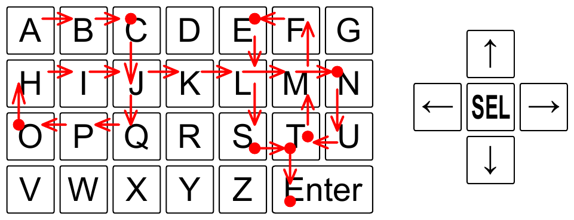

ACM-ICPC World Finals 2015 · Problem F
How many keystrokes are necessary to type a text message? You may think that it is equal to the number of characters in the text, but this is correct only if one keystroke generates one character. With pocket-size devices, the possibilities for typing text are often limited. Some devices provide only a few buttons, significantly fewer than the number of letters in the alphabet. For such devices, several strokes may be needed to type a single character. One mechanism to deal with these limitations is a virtual keyboard displayed on a screen, with a cursor that can be moved from key to key to select characters. Four arrow buttons control the movement of the cursor, and when the cursor is positioned over an appropriate key, pressing the fifth button selects the corresponding character and appends it to the end of the text. To terminate the text, the user must navigate to and select the Enter key. This provides users with an arbitrary set of characters and enables them to type text of any length with only five hardware buttons.
In this problem, you are given a virtual keyboard layout and your task is to determine the minimal number of strokes needed to type a given text, where pressing any of the five hardware buttons constitutes a stroke. The keys are arranged in a rectangular grid, such that each virtual key occupies one or more connected unit squares of the grid. The cursor starts in the upper left corner of the keyboard and moves in the four cardinal directions, in such a way that it always skips to the next unit square in that direction that belongs to a different key. If there is no such unit square, the cursor does not move.

Figure F.1, illustrating Sample Input 1, shows a possible way to type CONTEST using 30 strokes on an example virtual keyboard. The red dots represent the virtual keys where the select button was pressed.
The first line of the input contains two integers r and c (1 ≤ r, c ≤ 50), giving the number of rows and columns of the virtual keyboard grid. The virtual keyboard is specified in the next r lines, each of which contains c characters. The possible values of these characters are uppercase letters, digits, a dash, and an asterisk (representing Enter). There is only one key corresponding to any given character. Each key is made up of one or more grid squares, which will always form a connected region. The last line of the input contains the text to be typed. This text is a non-empty string of at most 10 000 of the available characters other than the asterisk.
Display the minimal number of strokes necessary to type the whole text, including the Enter key at the end. It is guaranteed that the text can be typed.
4 7 ABCDEFG HIJKLMN OPQRSTU VWXYZ** CONTEST
30
5 20 12233445566778899000 QQWWEERRTTYYUUIIOOPP -AASSDDFFGGHHJJKKLL* --ZZXXCCVVBBNNMM--** -------------------- ACM-ICPC-WORLD-FINALS-2015
160
2 19 ABCDEFGHIJKLMNOPQZY X*****************Y AZAZ
19
6 4 AXYB BBBB KLMB OPQB DEFB GHI* AB
7